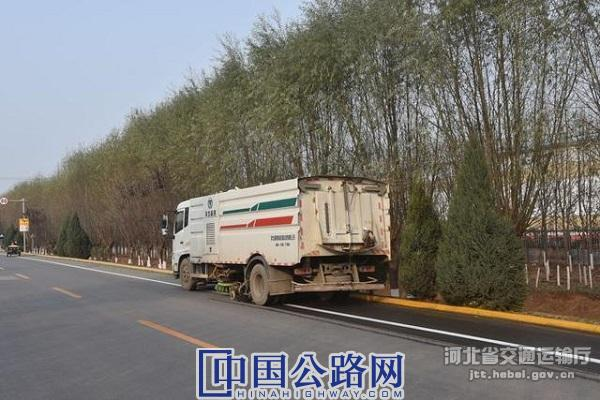

微官网
微官网
2020-12-09 河北省交通运输厅 作者：石胜涛

随着冬季来临，气候条件不断变化，为确保全县农村公路安全畅通，给群众出行提供良好的道路行车条件，广平县地方道路管理站采取多项措施，全面做好冬季农村公路管理养护工作。
一是加强日常养护巡查力度，随时掌握路面及沿线设施状况，加大路面清扫力度，确保路面无污染、无杂物。
二是制定和完善农村公路突发事件和恶劣天气应急处置预案，健全各项应急保障措施。一旦遇到雨雪天气，坚持全线防、重点清、先通后畅原则，清扫路面，清除积雪，确保急弯、桥梁等重点路段、重点部位的积雪及时清除到路基以外，并做好排水系统的疏通工作。
三是加强对存在安全隐患路段和桥梁的隐患排查工作。对急弯陡坡路段及时更新完善警示标志，处理路面坑槽等病害，力求路面平整、边沟畅通、标志完善。完善桥梁、涵洞档案，发现问题及时采取防范、加固和维修措施。
四是加强应急值班和信息报送工作。严格落实应急值班制度，实行24小时值班，随时关注天气情况，保持通讯畅通，一旦出现雨雪等恶劣天气，做到人员、物资、机械立即到位，采取应急措施。
截至目前，该县交通已经完成1100根警示桩安装，修复农村公路坑槽等病害160余处，储备融雪剂2吨，维护应急保障运输车辆5台，全面保障冬季农村公路出行安全。